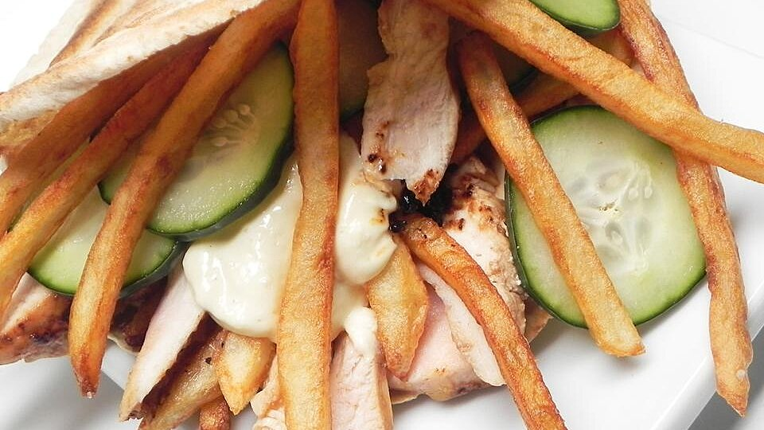

Lasagna Recipe

Description
This is the authentic shawarma taste that I have always loved during my stay in the Middle East. Light and filling! It's totally divine!
Ingredients
- 2 tablespoons white vinegar
- 2 tablespoons soy sauce
- 2 teaspoons garlic paste, divided
- 1 teaspoon ginger paste
- 1 teaspoon salt
- 1 teaspoon ground black pepper
- 1 pound skinless, boneless chicken breasts
- 3 potatoes, cut into fries
- oil for frying
- 1 tablespoon vegetable oil
- 1 cup mayonnaise
- 8 pita breads, split
- 1 cup pickled cucumbers
Steps
- Mix vinegar, soy sauce, 1 teaspoon garlic paste, ginger paste, salt, and pepper together in a shallow dish. Add chicken breasts; turn to coat. Marinate in the refrigerator for at least 30 minutes.
- Heat 2 inches oil in a heavy pot to 325 degrees F (165 degrees C). Fry potatoes in batches until golden brown, about 5 minutes. Transfer to paper towels to drain.
- Heat 1 tablespoon vegetable oil in a large skillet over medium heat. Remove chicken breasts from the marinade and cook until browned and no longer pink in the center, 6 to 8 minutes per side. Transfer to a cutting board; slice into thin strips.
- Mix remaining 1 teaspoon garlic paste with mayonnaise in a bowl.
- Spread garlic mayonnaise inside pita breads. Fill each pita with French fries, chicken slices, and pickles.